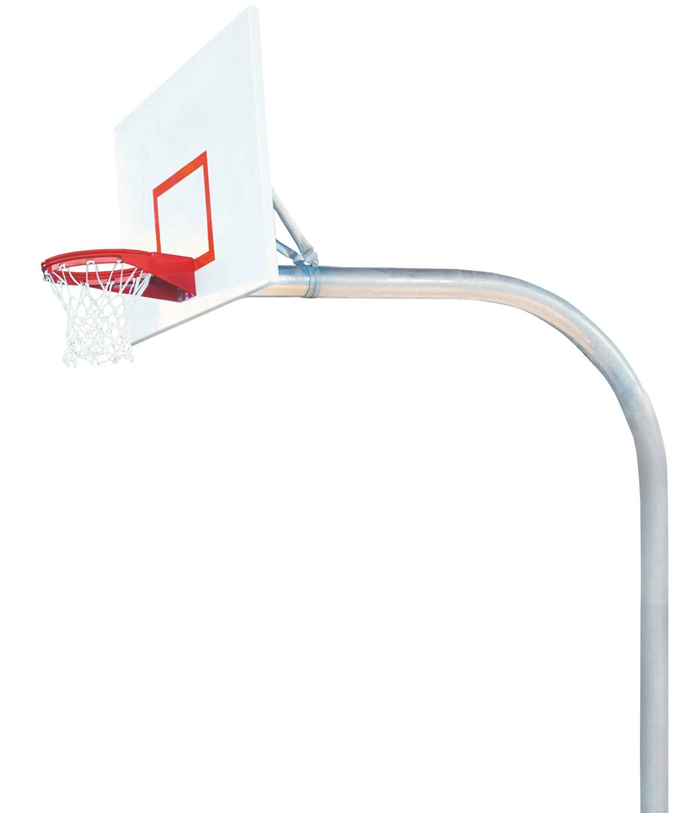

The basketball rule summary  |
Overtime violation 1.3 second rule: when a team controls the ball, the players of the same team shall not stay in the penalty area for more than 3 seconds. If a player of the same side stays in the other side's restricted area for more than 3 seconds during the game or when he throws the ball out of bounds after holding the ball, the referee will immediately whistle and award a penalty of 3 seconds. 2.5 second rule: when a player with the ball is closely guarded and does not pass, pitch, roll or dribble within 5 seconds, he will also be convicted of a violation. In the past five seconds, the penalty ball was awarded illegally. Now, the opponent's players throw the ball out of bounds nearby. 3.8 second rule: a team starts to control the ball from the back court, and must push the ball to the front court within 8 seconds, otherwise, it will be judged as 8 second violation and the opponent will throw the ball out of bounds. 4.24 second rule: after a team controls the ball on the court, it must shoot within 24 seconds, otherwise it will be judged as a 24 second violation. In the past, if the ball was knocked out of bounds by the opponent within 24 seconds, 24 seconds would be recalculated. Now, after throwing the ball out of bounds from the sideline, 24 seconds will not be recalculated. Instead, you must shoot in the remaining time of 24 seconds. Otherwise, you will still be judged as a 24 second violation and the opponent will throw the ball out of bounds. general provisions Rules of seven fouls and one plus one free throw of the whole team: in every half of the game, the total number of fouls and technical fouls of a team member has reached seven times. After that, if any member of the team commits another fouls or technical fouls, the rule of one plus one free throw will be implemented and the other member will be awarded one free throw. If the free throw is successful, the member will give another free throw If the first free throw fails, the game shall continue and no additional free throw will be given. If the free throw doesn't touch the hoop, it's a violation and the opponent throws the ball out of bounds on the sideline. |
| Technical terms (1) Dunk: players with one hand or two hands holding the ball, jump in the air from top to bottom directly into the hoop. (2) Make up basket: when the shooting fails, the player jumps up in the air to make up the ball into the basket. (3) Card position: the attacker uses footwork to block the defender behind him. This kind of footwork is called card position. (4) Lead and catch: move in the direction of passing the ball and catch the ball. (5) Misplaced defense: the defender stands on the side of the attacking person he is defending and blocks him from catching the ball. (6) Important position: the attacker uses his body to block the defender behind him and occupy a favorable position to catch the ball. (7) Breakthrough: dribble over the defender. (8) Air cut: the attacker runs to the basket empty handed. (9) First pass: the first pass of the catcher from defense to attack. (10) Block: the act of a defender trying to knock the ball out of the air when the attacker is shooting. (11) Fill position: when one defender loses the right defensive position, the other defender takes the right defensive position in time. (12) Assist defense: assist partner defense. (13) Press defense: close to the attacker, and constantly use offensive defensive actions to threaten the safety of the opponent's holding the ball or prevent the opponent from catching the ball. (14) Slant: run from the sideline to the basket or to the middle of the court. (15) Time difference: when shooting, in order to avoid the blocking of the opponent's defense, the use of air stay to change the shooting time. [2] (16) Rebounding: after the shooting fails, the players of both sides compete for the right to play basketball on the basket or backboard. (17) Free throw: after the offensive players are fouled, they shoot in the semicircle behind the free throw line without fighting. Each goal will get one point. (18) Pick and roll: when attacking players attack, teammates get rid of the defense for the ball holder by picking and rolling defensive players. (19) Empty catch: the player with the ball throws the ball to the basket, the player without the ball jumps to the basketball position, and shoots (dunks) to score |
Technical rules (1) Technical fouls: technical fouls refer to all fouls made by players who do not contact with the other team members. Players shall not ignore the advice of the referee or use improper behavior. (2) Two dribbles: also known as "illegal dribble", players are not allowed to dribble again after the first dribble. After losing control of the ball, they can only shoot and pass the ball, unless the ball is touched by another player. (3) Hitting with the ball: the body contact that the ball holder pushes or moves to the trunk of the defensive player. When the defensive player has already stood in advance at the moment of contact, the offensive player constitutes a hitting with the ball. (4) Blocking fouls: offensive and defensive fouls caused by improper position, incorrect posture, improper starting method and illegal action between the ball holder and the defensive ball holder. (5) Hitter fouls: also known as "illegal use of hands", in dribbling or layup, shooting when the defender hit, so it will be called the hitter fouls by the referee. (6) Walking: also known as "walking with the ball violation", it refers to the illegal movement of a player's foot or feet in any direction beyond the limit stated in the rules when he is holding a live ball on the field. (7) 24 second violation: 1. When a player controls a live ball on the court, the team must finish shooting within 24 seconds. The timer is an indispensable part of the basketball game, allowing 24 seconds, when the basketball is still in the flight track after the shooting action, if the basketball finally touches the basket, the 24 second timer will reset, if the shooting fails to touch the basket, it will be judged as a 24 second overtime violation; 2. Controlling the team not to shoot within 24 seconds, to send out a 24 second signal sound, violating this rule is a violation. (8) Eight second violation: the team in charge of the attack must deliver the ball to the opponent's half court within eight seconds. If the ball can't be delivered to the opponent's front court before eight seconds, the referee will award the opponent a service and the game will start again. (9) Five second violation: 1. The offensive player must throw the ball out of bounds within five seconds; 2. When he is strictly defended, he must pass, throw or dribble the ball within five seconds; 3. When he is free throw, the free throw player must throw the ball within five seconds. (10) Fouls of both sides: Fouls of both sides are two members of each other who attack each other at about the same time. In case of fouls by both parties, each fouler shall be registered for one time, and no penalty shall be awarded. Besides, only the fouls shall be registered for the players, and no fouls shall be registered for the whole team. |